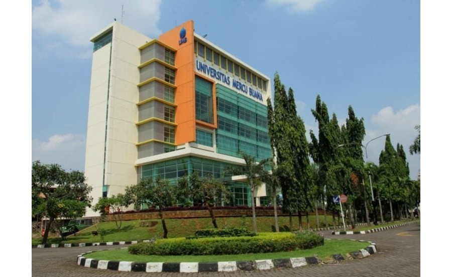

Universitas Mercubuana.

Universitas Mercu Buana adalah Perguruan Tinggi Swasta yang menyelenggarakan Tridharma Perguruan Tinggi yaitu pendidikan, penelitian, dan pengabdian kepada masyarakat, didirikan di Jakarta pada tahun 1985 di bawah pembinaan Yayasan Menara Bhakti. Universitas Mercu Buana bernaung pada Lembaga Layanan Pendidikan Tinggi (LLDIKTI) Wilayah III Kementerian Riset Teknologi Dan Pendidikan Tinggi (KEMRISTEKDIKTI) Republik Indonesia. Sejak bulan Desember 2016 Universitas Mercu Buana memperoleh Akreditasi Institusi Perguruan Tinggi (AIPT) dengan peringkat "A" atau Unggul dari Badan Akreditasi Nasional Perguruan Tinggi (BAN-PT). Saat ini Universitas Mercu Buana sedang dalam proses untuk memperoleh akreditasi internasional.
Azas dan Tujuan
Universitas Mercu Buana didirikan berazaskan pada Pancasila, Undang-Undang Dasar 1945 dan Tri Dharma Perguruan Tinggi, dengan tujuan pendidikan untuk turut mencerdaskan kehidupan usaha pembangunan dalam mencapai kesejahteraan rakyat Indonesia. Universitas Mercu Buana menyelenggarakan sistem studi yang lebih berorientasi pada pengembangan sikap profesional, dengan menggunakan kurikulum dan silabi yang selaras dengan kebijakan Kementerian Riset, Teknologi, dan Pendidikan Tinggi didukung dengan kegiatan penelitian dan praktek kerja nyata di berbagai perusahaan atau instansi pemerintah/swasta.
Bertitik tolak dari tujuan diatas, penyelenggaraan program pendidikan diploma, sarjana, profesi, magister, dan doktoral Universitas Mercu Buana diarahkan untuk melahirkan lulusan yang mempunyai kualifikasi :
- Berjiwa Pancasila dan memiliki integritas kepribadian yang tinggi.
- Bersifat terbuka, tanggap terhadap perubahan dan kemajuan ilmu pengetahuan dan teknologi maupun masalah yang dihadapi masyarakat, khususnya yang berkaitan dengan bidang keahliannya.
- Mampu menerapkan ilmu pengetahuan dan keterampilan yang dimilikinya sesuai dengan bidang keahlian dalam kegiatan produktif dan pelayanan kepada masyarakat.
- Menguasai dasar-dasar ilmiah serta ilmu pengetahuan dan metodologi bidang keahliannya, sehingga mampu menemukan, memahami, menjelaskan dan merumuskan cara penyelesaian masalah yangada dalam wawasan keahliannya.
- Mampu mengikuti perkembangan ilmu pengetahuan dan teknologi serta keterampilan bidang keahliannya.